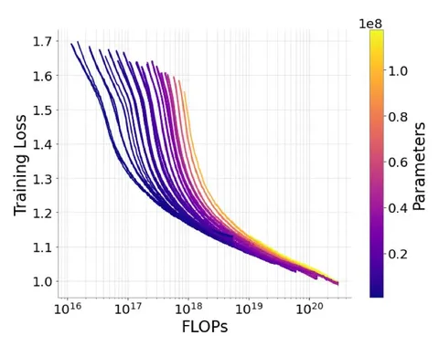

Waymo, подразделение беспилотных автомобилей Google, выпустили техрепорт о том, как масштабируются модели. Похожая статья об LLM сильно повлияла на свою сферу несколько лет назад. А теперь аналогичное исследование провели для планировщиков движения автомобилей.
Сегодня разберёмся, есть ли оптимальное соотношение между размером нейросети и количеством обучающих примеров: такое, чтобы получить лучший результат в рамках заданного бюджета вычислений.
Архитектура модели — обычный для планировщиков энкодер-декодер трансформер. Энкодеру c early fusion подают на вход информацию о сцене: дорожный граф, историю агентов (людей, машин, светофоров и других участников дорожного движения) за последние 5 секунд. Декодер из полученных эмбеддингов предсказывает дискретные ускорения для 8 агентов, а конечные траектории эго-автомобиля и других агентов восстанавливаются по Verlet.
В отличие от Wayformer и MotionLM, где фичи агента кодируются в локальной системе координат каждого агента, в этой статье кодирование происходит в одной системе — в системе координат эго (global frame).
Авторы обучали модель в режиме teacher forcing, используя cross-entropy loss. Датасет состоял из 6 млн уникальных и разнообразных (по утверждениям авторов) проездов, из которых простой фильтрацией и дедупликацией сэмплировали тридцатисекундные сегменты. Для получения большего числа сцен из этих сегментов используют скользящее окно 1,5 секунды.
Всего авторы обучили 84 модели (от 900K параметров до 118M). Они систематически меняли размеры модели, датасета и бюджета вычислений. Число параметров варьировали за счёт количества слоев энкодера и декодера (соотношение ширины к глубине — 8 или 16). В одинаковый бюджет модели с меньшим и большим числом параметров укладывались изменением числа шагов в обучении.
Разбор подготовил
404 driver not found
